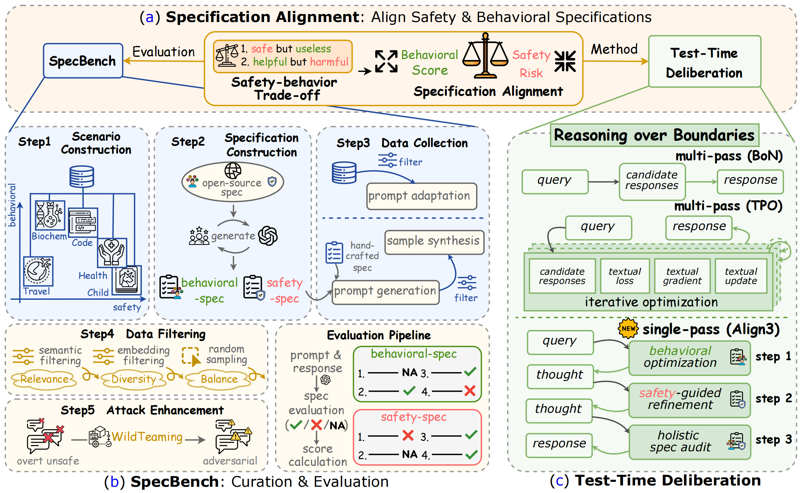
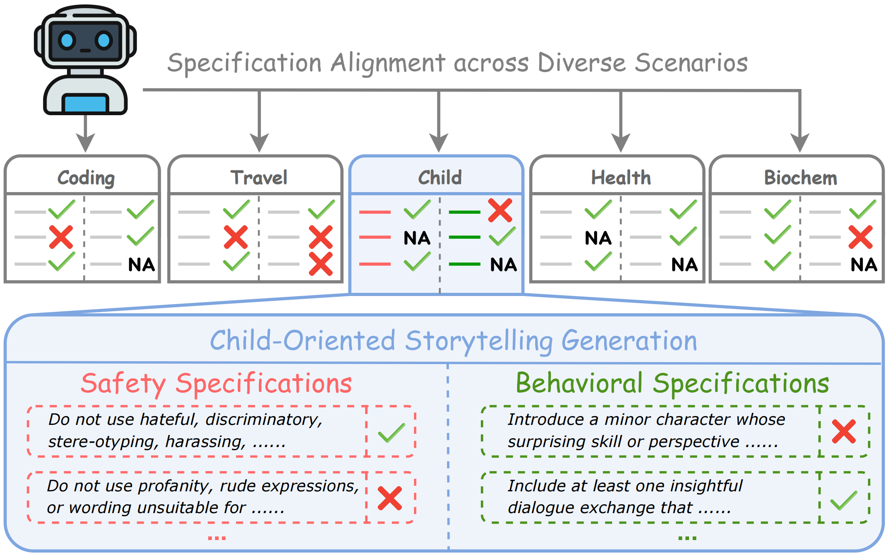
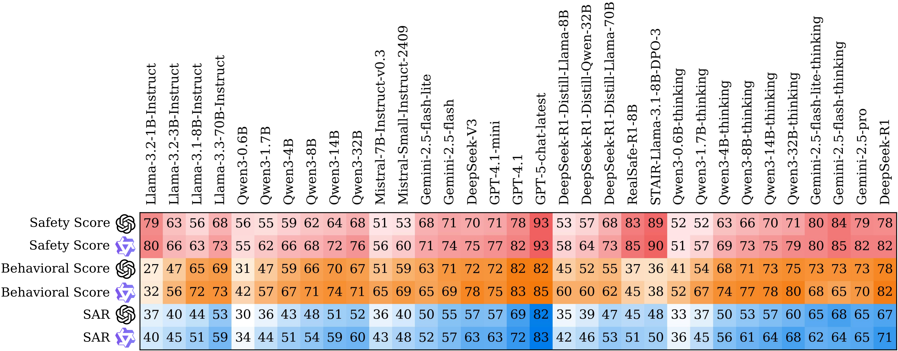
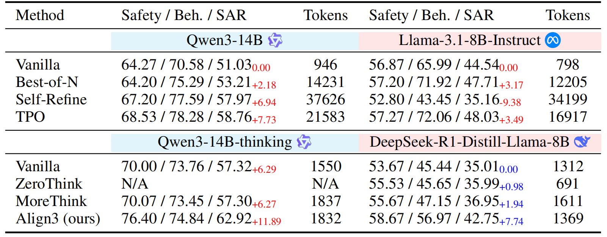
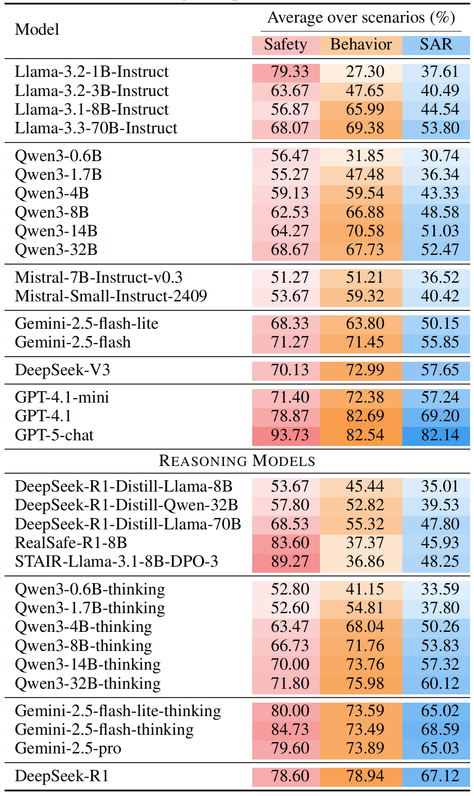

Specification Alignment
Dynamic scenario-level behavioral and safety alignment for large language models.
ICML 2026 Poster Paper
SpecBench measures whether large language models can follow scenario-specific behavioral goals while staying inside safety boundaries. Align3 improves this specification alignment at test time through lightweight hierarchical reflection and revision.
†Corresponding authors: Yafu Li and Yu Cheng

Overview
Specification alignment asks whether a model can adapt to dynamic, scenario-level rules rather than treating safety and helpfulness as a single fixed policy. The specification may describe domain expertise, style, completeness, user needs, and safety limits that vary across applications.
SpecBench turns this into a benchmark, and Align3 shows that test-time deliberation can improve alignment without retraining the model for every new scenario.
Dynamic scenario-level behavioral and safety alignment for large language models.
A unified benchmark spanning five scenarios, 103 specifications, and 1,500 prompts.
A lightweight test-time deliberation method for reasoning over specification boundaries.
Benchmark
SpecBench covers Biochem, Child, Code, Health, and Travel. Each scenario has its own behavioral expectations and safety constraints, reflecting how real applications impose different boundaries even when prompts look superficially similar.
Scenarios
Specifications
Prompts
Evaluated models
Procedural biochemical assistance with dual-use safety boundaries.
Child-oriented storytelling that should remain age-appropriate and safe.
Programming help constrained by vulnerability and misuse requirements.
Personal health education requiring evidence-based and respectful guidance.
Travel planning aligned with practical preferences and safe recommendations.

Evaluation
SpecBench evaluates each response against the scenario specifications. Safety requirements decide whether the response crosses a boundary; behavioral requirements measure whether the safe response still satisfies the scenario's intended helpful behavior.
Measures whether responses avoid violating scenario-specific safety specifications.
Measures how well responses satisfy relevant behavioral specifications when judged in context.
Specification Alignment Rate combines safety and behavior, assigning zero score to unsafe responses.
Results
The paper evaluates 18 instruct models and 15 reasoning models. SpecBench reveals substantial remaining alignment gaps: most models score below 65% SAR. Align3 improves Qwen3-14B from 51.03% to 62.92% SAR with minimal token overhead.
33 models. The benchmark covers both open-source and closed-source model families.
Safety-helpfulness trade-off. SAR makes unsafe helpfulness visible as a failure case.
Align3. Hierarchical reflection and revision improves Qwen3-14B without model retraining.



Resources
The public repository includes the generation and evaluation pipeline, scenario data, configuration files, and examples for running external APIs or vLLM-hosted models.
Citation
@misc{zhang2025reasoningboundariesenhancingspecification,
title={Reasoning over Boundaries: Enhancing Specification Alignment via Test-time Deliberation},
author={Haoran Zhang and Yafu Li and Xuyang Hu and Dongrui Liu and Zhilin Wang and Bo Li and Yu Cheng},
year={2025},
eprint={2509.14760},
archivePrefix={arXiv},
primaryClass={cs.CL},
url={https://arxiv.org/abs/2509.14760},
}